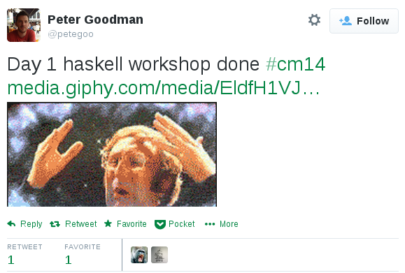

Lambda Lessons
Katie Miller (@codemiller)
Background: Who Am I?
- OpenShift Developer Advocate at Red Hat
- Former newspaper journalist
- Teaching experiences include: IBM EXITE Camps for teenage girls, Rails Girls workshops, the NICTA Lambda Ladies event, and various conference workshops and presentations
Motivation: Why Teach FP?
- FP is awesome
- It may not look that way to outsiders
- Sharing the awesomeness is to the community's benefit
FP Is Awesome
"[W]e're going to be living in a multicore, distributed, concurrent – all the buzz words – world. The conventional models we've been doing, the OO stuff...is not going to survive in that kind of environment. We're already seeing it beginning to fall apart." – Pragmatic Programmer Dave ThomasThere Are FP Learning Barriers
Sharing FP Has Benefits
- More programmers writing more functional code: software, libraries, languages
- Larger community helping FP to become more mainstream, leading to more FP jobs
- More diversity of ideas, driving innovation
Areas to Consider
Curricula and Pedagogy
- Set clear learning goals
- Choose primary emphasis: problem solving, language learning, project
- Consider target audience; build on what they already know
- Plan a series of small, achievable tasks leading to the end goals
- Use a variety of teaching mediums, including visual stimuli
Language Choice
- The best choice may depend on the individual
- Syntax has a significant impact on novices
- Language selection should tie in with learning goals
- Some possible choices: Lisps (Scheme, Clojure), Haskell, and Elixir
Teaching Tools
- Professional tools aren't designed for beginners; keep it simple, and explain it
- Obscure error messages are frustrating; choose tools that help students recognise/overcome them
- Environment set-up can be a major pain point; consider using the cloud
Experience Report 1: NICTA Lambda Ladies Workshop
Overview
- Free, three-day event at Red Hat Brisbane in March
- Content based on the NICTA Haskell course
- First NICTA event to include the Lambda Ladies branding and explicitly invite women
- Instructors: Tony Morris, Mark Hibberd, and myself, with help from Dave Laing
- Women given preference, but men also able to apply/attend; 16 women and 11 men accepted
What Went Well
- On day one, 12 women out of 23 students (52%); over the next two days, numbers dropped but the percentage still 53-55% women
- Good ratio of instructors to students
- Content paradigm-focused, consisting of a series of short exercises
- Expectation set it was OK not to follow every detail
- Feedback indicated material kick-started further learning
Issues Encountered
- Value/goals of course not clearly defined
- Levels of expertise and pace varied greatly
- Some felt there was too much content
- Some had difficulty with general tools and GHCI
- Several students had issues with whitespace in Haskell
Lessons Learnt
- If you want women to come to your workshop, invite them. Make it clear if workshop will be mixed gender; some prefer woman-only learning environments
- Make early mention of Haskell/GHCI quirks
- Include visual representations of key concepts
- Offer official slides/handouts/answers so no need to copy from projector/whiteboard
- Have all instructors/helpers deliver content; different perspectives are valuable
Experience Report 2: Haskell in the Cloud Workshop
Overview
- Four-hour workshop at Codemania Auckland conference in April
- Taught by myself and Tony Morris
- 17 registered participants (all men)
- Brand new course content, focused on Haskell basics and creating a Scotty web app in the cloud with the OpenShift PaaS
Demo

What Went Well
- Leveraged students' knowledge of web app development
- Clear goals; expectation set we would omit details
- Most got Haskell app running locally and in the cloud
- High level of engagement, during and afterwards
Issues Encountered
- Lack of time; a lot of FP concept/syntax explanation required before web app work possible
- Some network issues
- Some students had issues setting up tools locally, so could only run app in the cloud
Lessons Learnt
- Cloud can be helpful, but a plan B in case of network issues is a must
- The context of building something familiar can be a useful way to introduce FP concepts
- A workshop focused on several things sacrifices depth for breadth, but sharing the big picture of 'the FP way' can be a win
Teaching Opportunities
- Lunchtime talks at your workplace
- Presenting at local Meetup groups (FP-focused, and otherwise)
- Conference presentations
- Running or helping to coach at workshops
- Special events (eg: Clojure Bridge)
- Everyday workplace discussions
Conclusion

References and Credits
References
- An Empirical Investigation into Programming Language Syntax, Andreas Stefik and Susanna Siebert, 2013
- An Introduction to Language, Victoria Fromkin et al., 2005, Nelson Thomson, pp. 304-351
- A Survey of Literature on the Teaching of Introductory Programming, Arnold Pears et al., 2007
- A Theory of the Relationships between Cognitive Requirements of Computer Programming Languages and Programmers' Cognitive Characteristics, Garry L. White, 2002
- Debunking Myths About Gender and Mathematics Performance, Kane and Mertz, 2012
- Experience with an Analytic Approach to Teaching Programming Languages, Christopher Haynes, 1997
- Fostering Innovation Through a Diverse Workforce, Forbes Insights
- FP In the Cloud Codemania Workshop Repository
- Fun, functional, and teachable?, Interview with Dave Thomas
- How Diversity Can Drive Innovation, Sylvia Ann Hewlett et al., 2013
- Marzano's Nine Effective Instructional Strategies
- Mother Tongue, Bill Bryson, 1991, Penguin Books
- NICTA Course Repository
- Seven Deadly Sins of Introductory Programming Language Design, Linda McIver and Damian Conway, 1996
- The TeachScheme! Project: Computing and Programming for Every Student, Matthias Felleisen et al., 2003
Image Credits
Lambda Lessons
lessons.codemiller.com
Katie Miller (@codemiller)